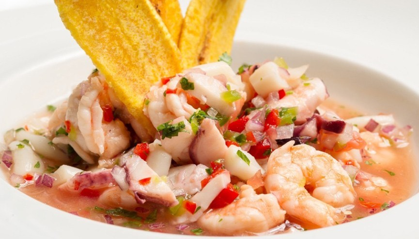

Shrimp Ceviche

Description
This easy recipe for authentic Guatemalan ceviche de camarón features cooked shrimp in a refreshing mix of tomatoes, onion, cilantro and celery in lime juice.
It’s a bright, fresh and zesty shrimp cocktail perfect as an appetizer or snack.
Ingredients
- 10 Roma tomatoes
- 1 pound fresh or frozen shrimp
- 3 stalks celery
- 1 white or red onion
- 1 tablespoon Worcestershire sauce
- 1/2 cup V-8 Juice 5 oz can
- 3 fresh limes to taste
- 1/2 cup cilantro to taste
- 1 jalapeno pepper (seeded) optional
Steps
- Peel, devein and cook shrimp in batches on medium-high in the microwave for 3-5 minutes until pink
- Dice tomatoes, celery, onions and jalapeno pepper ( if using) into small pieces by hand
- Allow shrimp to cool to room temperature and then combine with chopped vegetables
- Add V-8 juice, Worcestershire sauce, fresh-squeezed lime juice and chopped cilantro. Mix lightly
- Add sea salt to taste
- Chill and serve with saltines and hot sauce
Home